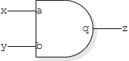
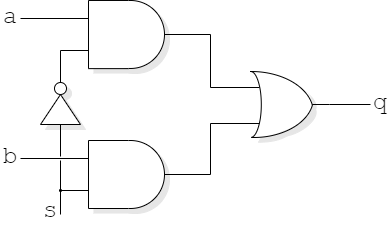

These pages are provided as a brief aide memoire. There are many books and web tutorials which give a more complete description. A suggested, on-line tutorial may be found at: http://www.asic-world.com/verilog/
The full standard (IEEE Std 1364-2001) is available via IEEE Xplore (via the Library subscription) — and, possibly, in other places.
This not meant to be comprehensive – it should be a reminder of some common constructs; you may meet some new material later!
| Syntax | Use |
|---|---|
| wire aaa; | A simple, combinatorial logic variable. |
| reg bbb; | A variable which may (or may not) be state holding. |
| reg [7:0] ccc; | As above, but an eight bit value. |
Operators are, in general the same as in C or Java. There are some additional features:
| Syntax | Use |
|---|---|
| >> | Right shift (logical) |
| >>> | Right shift (arithmetic, if applicable) |
| &ccc | A (unary) reduction operator; ANDs all the bits in the variable together. Others include ‘|’, ‘^’, ‘~&’ etc. |
| {ddd, eee} | Concatenate two (or more) variables. |
| {4{fff}} | Concatenate four copies of fff. |
| Syntax | Use |
|---|---|
| initial | Execute following statement once, starting at time = 0. |
| always | Run following statement continuously. (Needs some form of delay!) |
| always @ (…) | Run following statement whenever an event in the parenthesized list occurs. |
| Syntax | Use |
|---|---|
| #20 | Wait for 20 time units. |
| @ (posedge clk) | Wait for a (rising edge) event on signal. |
| Syntax | Use |
|---|---|
| 1234 | A decimal number. |
| 16'hABCD | A 16-bit hexadecimal number. |
| 4'b1010 | A 4-bit binary number. |
| x ('hx etc.) | The ‘unknown’ value. |
| z | The high-impedance state. |
| Syntax | Use |
|---|---|
| assign a = b + c; | A continuous assignment; combinatorial logic. Assigns to wire. |
| d = e & f; | Blocking assignment. d may be reassigned in block,
reading top-to-bottom. Use for combinatorial logic. Assigns to reg. |
| g <= h; | Non-blocking assignment. g should be assigned at most
once at any time. Use for registers. Assigns to reg. |
For synthesis (at least!) only assign to each variable in one block. (If you are writing combinatorial code with blocking assignments you can reassign a variable within that block in a similar manner to software programming.)
| Syntax | Use |
|---|---|
| if (…) … {else} … | C/Java like choice. |
| case | Multi-way ‘switch’ choice. |
| repeat (10) | Perform following statement ten times. |
| while (…) … | C-like repetition. |
| for (…;…;…) | C-like repetition. |
Some of these constructs are useful for testbenches but are not synthesizable.
initial clk = 1; // Set clock initial value
always #5 clk = !clk; // Oscillate with 10 unit period
initial #1000 $stop; // Limit simulation run time
initial
begin // Bracket following into one statement
reset = 1'b1; // Initialise the Device Under Test
en = 1'b1; // Set up an initial input value
@ (posedge clk) // Wait for next rising clock edge
reset = 1'b0; // Remove reset
while (c == 0) @ (posedge clk); // Wait until output 'c' asserted
en = 1'bx; // Make input 'en' undefined
end // End of statement (but time continues)
This testbench assumes the existence of some design which has defined the variables. It is reminiscent of the stimulus files used in testing in Questa.
In the example above there are four separate blocks. The three ‘initial’ blocks start at time = 0 and run once. Thus the first statement initialises an input and stops. The other ‘initial’ statements contain delays which can deschedule them for periods of (simulation) time.
The ‘always’ block has no sensitivity list so it runs immediately. A conflict with the preceding ‘initial’ assignment is avoided by the delay. Following the delay the clock is inverted and the always runs again; thus the clock oscillates. The second ‘initial’ block waits for a (long) time and then tells the simulator to halt. Without this the simulation would run forever – or until it is halted by user intervention.
Note: it would be a mistake to write something purely like:
always clk = !clk;
Combinatorial logic loops like this (usually somewhat more subtle involving chains of signals) are quite common mistakes. We've added a page of description of the simulation process to help understand what happens.
The method shown is not the only way to achieve the desired effect. For example the clock (and termination) may be produced by:
initial
begin
clk = 0;
repeat (200) #5 clk = !clk;
$stop;
end
You may prefer this style.
module counter (input wire clk, input wire en,
output reg [3:0] count, output wire c);
reg [3:0] next; // Internal variable (combinatorial)
always @ (count) // Run block when ‘count’ changes
begin
next = count + 1; // Blocking assignment
if (count == 9) next = 0; // Variable may be reassigned
end
always @ (posedge clk, posedge reset)
if (reset) count <= 0; // Asynchronous reset
else if (en) count <= next; // Maybe adopt new value (non-blocking)
else count <= count; // This clause may safely be omitted
assign c = (count == 9); // TRUE is a ‘1’ value
endmodule
The example is contrived to illustrate a number of different Verilog features.
‘next’ is sometimes reassigned in its block but it is always assigned, thus the combinatorial block always calculates its result(s) from its input(s). This guarantees it is combinatorial and does not need any state holding. (See note below).
The description of the register, with its asynchronous clear, is one which will be recognised by the synthesizer.
The register (‘count’) does not need the second else; if it is not enabled it will do nothing. There is already a state-holding element here so this doesn't affect the circuit.
The carry output (‘c’) is assigned combinatorially from a comparator. In practice this may ‘glitch’ as its input bits change. This doesn't matter as long as it's only sampled on a clock edge. It should not be used as a clock, itself.
It is also possible, and sometimes clearer, to incorporate some of the logic in the same statement as the register assignment.
always @ (posedge clk, posedge reset)
if (reset) count <= 0; // Asynchronous reset
else if (en)
if (count == 9) count <= 0;
else count <= count + 1;
The choice of style can depend on the author. This is shorter than the previous example (above) although the variable ‘next’ or equivalent – the state that is about to be entered – is sometimes a convenient input for other logic … or for viewing for debug purposes.
Because Verilog is a Hardware Description Language it acts like a programming language: if a variable is not being defined (at any time the thread is run) then it retains its previous value. In a hardware realisation this implies there must then be a storage element. In many cases this is not what is wanted in a synthesized design.
A logic synthesizer will usually spot the problem and produce a ‘WARNING’; unfortunately may people tend to ignore warnings.
Some ‘features’ of Verilog are open to abuse. It is possible to write Verilog code in numerous ways. Some ways are error-prone; they ‘look’ right but behave oddly, or are unduly expensive to build. Some models will run on a simulator. Some will run on particular simulators, but not on others. Some will run when synthesised into hardware. Some will be reliable across all tools and implementations.
Here are some guidelines to help you achieve the last of these cases.
If you have more simple, useful recommendations, do share them!
Verilog can also be used to specify hierarchical designs.
Example
and2 gate_1 (.a(x), .b(y), .q(z));
where
and2 is the part (module) name
gate_1 is the instance name
{a, b, q} are the inputs/output of the module
{x, y, z} are wires at the higher level
Structural Verilog allows the explicit inclusion of certain cells within a design. The example below shows a simple module with a schematic equivalent.
module demo (input wire clk,
input wire [7:0] a,
input wire b,
input wire c,
output wire p,
output wire [15:0] q);
wire d, e, f;
wire [7:0] w;
assign d = b || c;
// Synthesizable statement
block_1 I1(.clk(clk), .a(a), .b(d), .i(e), .j(w));
block_2 I2(.clk(clk), .a(w), .k(f), .l(q));
and2 I3 (.a(e), .b(f), .q(p));
endmodule
This example is contrived to show some features:
Assume we have a module declaration:
module and2 (input a, input b, output q);
The Verilog 2001 syntax
and2 gate_1 (.a(x), .b(y), .q(z));
explicitly connects wires/buses to ports on the module by associating their
names. The order in which these are written is irrelevant. Ports may be omitted
(although this is only sensible for outputs; inputs should always be defined).
Verilog 1995 syntax relies on ordering:
and2 gate_1 (x, y, z);
…
Backwards compatibility means that Verilog 2001 will accept either.
It is suggested that the later syntax is preferred because it
is more robust against later edits, e.g. if another port is added to a
module.
Verilog is a Hardware Description Language but, if a subset of its
features are used, the description can be turned into an
implementation.
Just as a compiler takes a high-level language description of an
algorithm and turns it into machine instructions for a chosen
instruction set, a Verilog synthesizer turns a hardware description
into an underlying technology.
The technology will vary according to what is on offer on the target
process. Cell libraries are usually available from the
silicon foundry.
A typical cell library will contain familiar gates such as AND2, AND3,
OR2, … [and more - but more on that later].
During synthesis structures are identified in the source – and
sometimes this fails. The lower right of the figure above shows a D-type
register with an asynchronous clear. Reassure yourself that you
follow the behaviour of this code.
Here's a genuine example we found with one synthesizer:
always @ (posedge clk, posedge rst)
‘rst’
is an asynchronous reset: a change of this signal will
‘run’ the block.
It is not uncommon to have asynchronous resets to
flip-flops/registers, as in “Stop what you're doing right
now!” This is okay as the reset becomes active.
However, in such circumstances, it is important that the
reset inactivation is coordinated with the clock, otherwise
there could be a timing violation (see later notes) and parts of a
system may be held in reset whilst others start running again. This
can lead to unpredictable behaviour: not a Good Thing.
Behaviourally these blocks are the same. They should simulate in the
same way. However the author needed to separate the asynchronous
input explicitly for synthesis.
When synthesizing for an FPGA the tool will look for structures it
can recognise and try to map these into the available resources.
Examples:
Synthesis: (possible) examples
assign y = a & b | c;
assign q = s ? i1 : i0;
always @ (posedge clk, posedge rst)
if (rst) Q <= 0;
else Q <= D;
C compiler
Verilog
Syntax parsing Syntax parsing
Semantic Analysis ‘Elaboration’
Optimisation Optimisation
Code dump Technology mapping
if (rst || clr) Q <= 0; // Failed to synthesize
else Q <= D;
always @ (posedge clk, posedge rst)
if (rst) Q <= 0;
else if (clr) Q <= 0; else Q <= D;
‘clr’
is an additional, synchronous reset; since it is only to be checked
at active clock edges it is not in the sensitivity list.
Note on resets
FPGA …

? s a b q
x 0 0 0 0
x 0 0 1 0
x 0 1 0 1
x 0 1 1 1
x 1 0 0 0
x 1 0 1 1
x 1 1 0 0
x 1 1 1 1
Logic functions will then be amalgamated to fit into LUTs of the appropriate size.
If a statement cannot be mapped into an available structure then the design may not fit the FPGA.
On the right are two RAM read structures. The upper one does not map to Xilinx block RAMs and therefore the RAM will be expanded into (a LOT of) combinatorial logic.
The lower structure looks bigger but exploits the available
resources and thus is (much) more efficient.
Back (up) to Verilog
Forward to more Verilog notes